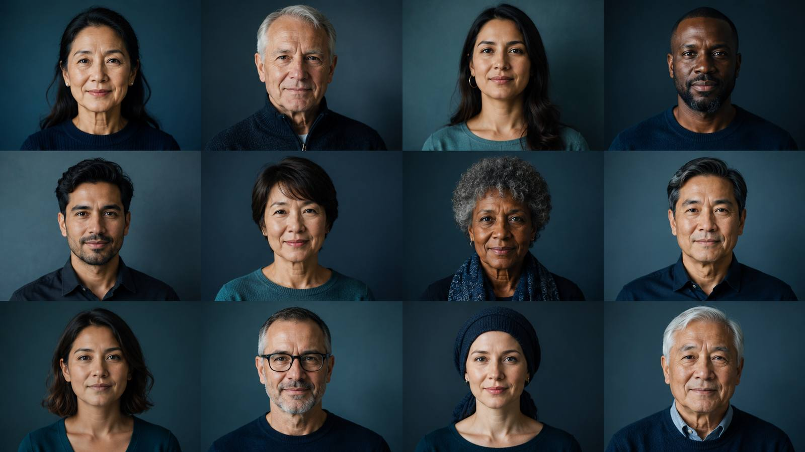

Touch Medical · prototype · Tepotinib in METex14 skipping NSCLC
✦
Tepotinib in METex14 skipping NSCLC
VISION at ≥3 years
A short, guided walk through the ≥3-year VISION data, at your own pace. The headline comes first; the full evidence is always one tap away.
Around 6 minutes · press Begin, or use the arrow keys
Image generated by ChatGPT & Forged Frameworks
Before we start
How to explore
⌄
Open a Curiosity
Tap for a little more, then “view the full figure” for the original data.
Aa
Hover a term
Dotted terms show their meaning, the first time each appears.
1
Tap a source
Superscripts open the reference. Tap away to close.
↔
Move at your pace
Next / Back or the arrow keys. A nudge appears once you’ve explored a scene.
◐
Background animation
Turn the motion off any time, top-right.
☰
Contents
Jump between sections and back again, top-right.
Try all three now
About half of patients responded to tepotinib.
ORR was 51.8% (95% CI 46.1–57.4), N=313.
Learning objectives
By the end, you’ll be able to…
1Recognise METex14 skipping NSCLC as a targetable oncogenic driver, and tepotinib’s role.
2Interpret the long-term (≥3-year) efficacy of tepotinib in VISION: response, durability and survival.
3Appraise its safety, tolerability and impact on quality of life.
4Recognise the consistency of benefit across subgroups, treatment lines and in Asian patients.
Contents
The journey
1Setting the sceneStart here
2Does it work?Next build
3Which patients benefit?Next build
4What’s it like to take?Next build
5Outcomes in Asian patientsNext build
6After tepotinibNext build
7Summary & sourcesNext build
This prototype builds out Setting the scene in full. The rest gets the same treatment once the feel is right.
Setting the scene · The driver
A rare driver, but a targetable one
Some lung cancers are driven by a single genetic change. METex14 skipping is one of them, and, unlike many, it can be targeted.
Driver
an oncogenic driver of NSCLC tumor growth
Losing exon 14 removes a control on MET, so signaling stays switched on, driving proliferation, survival, invasion and metastasis.
Poor
prognosis: an independent adverse factor
METex14 skipping has been linked to poorer survival and is regarded as an independent adverse prognostic factor. But it confers sensitivity to selective MET TKIs.
Targetable
sensitive to selective MET TKIs
By tissue (RNA-based) or liquid (DNA-based) biopsy. Both are accepted for eligibility in VISION.
Image generated by ChatGPT & Forged Frameworks
Setting the scene · Consider
?
How common is METex14 skipping in NSCLC?
2–4%
of NSCLC harbour METex14 skipping: rare, but worth testing for
0
of NSCLC carry an actionable genomic alteration
Including around 45% of lung adenocarcinomas, which is why broad biomarker testing matters.
Setting the scene · The drug
Tepotinib
The driver can be targeted, with a once-daily tablet.
500 mg
once daily
500 mg tepotinib (450 mg active moiety), taken orally until progression or intolerable toxicity.
Selective
oral MET TKI
It selectively inhibits MET, suppressing the downstream signaling that drives tumor growth.
Approved
and guideline-recommended
Approved in multiple countries for advanced METex14 skipping NSCLC, and recommended in key guidelines including ESMO.
Image generated by ChatGPT & Forged Frameworks
Setting the scene · The trial
The VISION study
A phase 2, single-arm, open-label study across more than 130 sites. This module follows the 313 patients with METex14 skipping NSCLC.
0
METex14 skipping patients
→
tepotinib
500 mg once daily
→
ORR
primary endpoint, by IRC
Included
advanced / metastatic NSCLC with METex14 skipping
ECOG PS 0–1
≥1 measurable lesion
Excluded
EGFR / ALK alterations
symptomatic CNS metastases
prior MET / HGF inhibitor
Primary:ORR by independent review (RECIST v1.1). Secondary:DOR, PFS, OS, safety. Data cut-off 20 May 2024.
Image generated by ChatGPT & Forged Frameworks
Setting the scene · Before this cut-off
Where the data stood before
At the previous cut-off (November 2022), tepotinib had already shown durable responses. This module updates VISION to ≥3 years (May 2024).
0
ORR at the November 2022 cut-off
Tier 2 · ≥3-year data by subgroup
Objective response rate, % (95% CI). Teal line = overall.
0
median duration of response (mDOR)
Tier 2 · Kaplan–Meier view
A sketch of how the full time-to-event view sits behind the headline.
Edema
peripheral edema, the most common side effect
Tier 2 · treatment-related AEs
Nine common TRAEs occurred in >10% of patients, led by peripheral edema (67.7%), then hypoalbuminemia and nausea.
Image generated by ChatGPT & Forged Frameworks

Setting the scene · The patients
Who were the 313 patients?
0
median age, years
Range 41–94 years. Around half were female (50.8%).
0
ECOG PS 1
By tissue (T+) or liquid (L+) biopsy. Both are accepted for eligibility.
Adenocarcinoma81%
Treatment-naïve (1L)52%
Asian patients34%
Image generated by ChatGPT & Forged Frameworks
✦
In short
METex14 skipping is a rare but targetable driver of NSCLC. VISION tested once-daily tepotinib in 313 patients. We now have ≥3 years of follow-up to explore.
Next, the question that matters most: does it work?
Where you stand
How confident do you feel?
There are no wrong answers. This just flags what to revisit as the module continues.
→
That’s the opening of the journey
You’ve met the driver, the drug, the trial and the patients. Each headline came first, with the evidence a tap away. From here the same rhythm carries on through Does it work?, Which patients benefit?, What’s it like to take?, Asian patients and After tepotinib.
This is the feel to react to. Once it’s right, the rest of the module follows.
Scene 1 of 13
›
Source
Full data · tier 3
Prototype · guided-journey · Setting the scene built in full · fits the 1370 × 700 Visme embed box